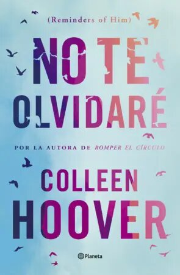

Publicaciones
| Novedades | ||||
| Portada | Titulo | ISBM | Autor | Compra |
| El club de la lectura del refugio antiaereo | 9788408278856 | Annie Lyons | Comprar libro | |
|  | No te olvidare | 9789504983583 | Colleen Hoover | Comprar libro |
| La tierra bajo tus pies | 9788408287421 | Cristian Lopez Barrio | Comprar libro | |
| Extasis | 978-8415952428 | Irvine Welsh | Comprar libro | |
| Donde todo brilla | 9788408269281 | Alice Kellen | Comprar libro | |
| La biblioteca de los nuevos comienzos | Alice Kellen | Michiko Aoyama | Comprar libro |
Lo mas vendido
| Lo mas vendido | ||||
| Portada | Titulo | ISBM | Autor | Compra |
 |
La ciudad de los muros insiertos | 9788411074278 | Haruki Murakami | Comprar libro |
 |
Comentaios al Neucrato | 9789504985921 | Reboard Tomas | Comprar libro |